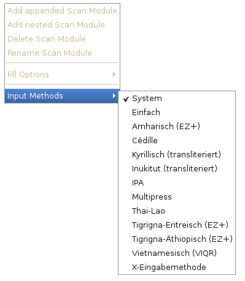

This menu entry is contributed by Gtk. To deactivate it the file /home/<username>/.gtkrc-2.0 must contain the following lines:
gtk-show-input-method-menu = 0gtk-show-unicode-menu = 0
In order to use these settings the application has to be restarted. Keep in mind that this is a global setting, i.e. every application using Gtk will not show this menu anymore.